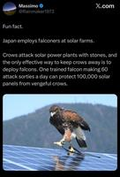

0

Slashdot reader BrianFagioli writes: Florida International University researchers have developed a technique called JaiLIP (Jailbreaking with Loss-guided Image Perturbation) that uses subtle image modifications to bypass AI safety guardrails. Unlike traditional jailbreaks that rely on carefully crafted prompts, the attack works through images that appear normal to human viewers. The researchers tested the technique against BLIP-2, a multimodal AI model, and found that manipulated images significantly increased the likelihood of harmful responses. According to the study, the approach outperformed previous image-based jailbreak methods and nearly doubled the number of unsafe outputs generated during testing. The findings highlight a potential security risk for businesses deploying AI systems that process both images and text. While most discussions about AI safety focus on prompts, the research suggests that seemingly harmless images may also serve as an attack vector.
Read more of this story at Slashdot.
The Los Angeles Police Department says about 1,500 police agencies across America have drone programs, reports SFGate, and 58 of those drone-using police agencies are in California.
The Sacramento County sheriff's office recently posted drone footage on Instagram set to theme from "Mission: Impossible," claiming "a nationwide first" where their drone successfully disarmed a felon "seen earlier with a firearm" (though now not moving, but holding a knife while lying face down in a garage). In the video the "not responding" suspect continues not moving as the drone dangles a magnet which catches on the knife. The drone then pulls multiple times until it comes out of the unmoving suspect's hand. The sheriff's office says their footage shows their drone "disarm an armed suspect, helping bring the incident to a safe resolution," in their post on Instagram, "rather than rush into a potentially deadly encounter..."
Was he pretending to be dead or simply lying in wait for deputies to approach...? It's also worth noting that our drones are labeled as "military equipment" (even though anyone can purchase them at their local Walmart), but are really just another piece of technology helping deputies resolve dangerous situations safely. Their use protects both law enforcement personnel and suspects.
SFGate offers more reports from around California:
In Yucaipa, officials launched a Drone as First Responder (DFR) pilot program on May 28, the San Bernardino County Sheriff's Department announced this month. According to the release, drones have already been used to respond to over 100 calls for service, arriving before deputies for 71% of them. "The drones also contributed to 12 arrests, assisted in locating persons of interest on 37 occasions, and provided aerial overwatch during 44 incidents," it continues, though details on how they assisted the police are unclear. The drones, manufactured by Skydio, were also used to locate a young person experiencing a mental health crisis and another person launching illegal fireworks.
Read more of this story at Slashdot.
The Jerusalem Post reports that doctors at Haifa's Rambam Health Care Campus "have successfully treated their first Israeli opioid addiction patient using an experimental noninvasive brain technology, easing him through withdrawal in just 20 minutes..."
[T]he team of specialists at the Haifa medical center intervened in the electrical activity of an area of the patient's brain called the nucleus accumbens, the core of the brain system responsible for feelings of satisfaction, pleasure, and reward. The treatment, based on technology from the Israeli company Insightec, is similar to the one used to treat symptoms of essential tremor and Parkinsonian tremor, under MRI control. In this case, the treatment was carried out with the help of a new technology that performs noninvasive neuromodulation, without heating or burning tissue, and allows stimulation in the same area of the brain to increase or suppress activity...
"Tests carried out a week later produced negative results for opioids and other substances," [said Dr. Lior Lev-Tov, director of the functional neurosurgery unit in Rambam's neurosurgery division and the one leading the new study at the medical center.] "The patient himself reported a craving score of zero out of 10 for using the drug, and even another side effect, a drastic drop in the desire for cigarettes, from three packs a day to just a few cigarettes, and with no urge to use alcohol. In other words, in a treatment that lasted about 20 minutes net, our patient was completely freed from an extreme dependence that had accompanied him every day for years. This is nothing less than a medical and therapeutic revolution."
Dr. Lev-Tov added that "This experience opens doors for us to treat a wide range of very serious illnesses such as PTSD, OCD, eating disorders, other addictions, severe depression, severe pain disorders, and I hope we will also be able to reach cognitive areas and treat attention deficit disorders, Alzheimer's, Parkinson's, and more."
Thanks to Slashdot reader Bruce66423 for sharing the article.
Read more of this story at Slashdot.
Thursday the Free Software Foundation blogged about this year's 47 'LibreLocal 2026' meetups, highlighting 10 that took place in Australia, Mexico, the United States, New Zealand, Cameroon, Switzerland, Spain, Argentina, China, and Iran. "Far from each other in many parts of the world, they came together around one unifying belief: free software."
We envisioned LibreLocal as a collage of in-person community meetups that would bring people together to swap ideas, learn from each other, and celebrate free software. When we asked the free software community to organize LibreLocals last year, the response was very inspirational: 29 different meetups were hosted. After we made the global call this year, we were greeted with an even more enthusiastic response... Organizers hosted LibreLocals in cafes, bars, restaurants, libraries, universities, a computer repair shop, and even as part of a field trip to the System Source Museum, a museum dedicated to the history of computing in Hunt Valley, Maryland, USA.
We also learned that a LibreLocal was organized inside Vakil Abad Prison in Mashhad, Iran by a free software supporter. Originally planned to be held in Shiraz, we were informed of this change in location on the LibreLocal wiki page set up for listing all LibreLocals. The updated entry, by another free software supporter in Iran, reads:
"This year, one of our dedicated activists organized a LibrePlanet event from within prison in Iran. Currently serving a sentence for "cyber-crimes" related to his promotion of free software, he continues to introduce the principles of software freedom to his fellow inmates. We have placed this banner to honor his resilience and the community of individuals in prison who continue to stand for technological freedom. His identity will be revealed when it is safe to do so."
Advocating for user freedom should never result in a prison sentence. We especially admire and respect the bravery and strength of those who fight for software freedom in the most dangerous and oppressive of environments.
50 people attended the LibreLocal meetup in Switzerland, according to one of the organizers, "forging connections between several local free software stakeholders and strengthening their cohesion." But the FSF's blog post stresses these are "ten stories among many more of free software supporters from across the globe... We also thank you our donors and associate members for the support that makes such meetups possible."
The GNU Press Shop is now open through July 19 for their biannual fundraiser, offering a variety of freedom-respecting novelties including an FSF-branded antisurveillance webcam guard and both technical and philosophical books, like Richard Stallman's Free as in Freedom (which allegedly has turned up in Anthropic's training data). Other items include a slick new FSF logo sticker, a brass and zinc GNU "emblem" pin with real gold plating, and a cheeky sticker reminding everyone that "There is no cloud." And there's even a plush GNU toy.
Read more of this story at Slashdot.
An anonymous reader quotes a report from Business Insider: For the most powerful voices in AI, it's all about being in the loop. Claude Code creator Boris Cherny recently said he doesn't write his own AI prompts much anymore. Thanks to loops, he doesn't have to. "It's an agent that prompts Claude," Cherny recently told CNBC, adding, "I don't write the prompt anymore. Claude writes the prompt, and now I'm talking to that new Claude that is kind of coordinating." In the same interview, Cherny said that loops and a similar feature were examples of the kind of work he would be proudest of in a decade.
Cherny isn't the only one embracing "loop engineering." OpenAI engineer Peter Steinberger, the creator of the viral OpenClaw project, wrote a public reminder to users who are still writing out prompts for AI agents. "Here's your monthly reminder that you shouldn't be prompting coding agents anymore," Steinberger wrote recently on X. "You should be designing loops that prompt your agents." [...] Steinberger shared an example of a loop he uses: "Tell codex to maintain your repos, wake up every 5 minutes and direct work to threads. That makes it easy to parallelize+steer work as needed." Claire Vo, founder of ChatPRD and host of the "How I AI," said, "it's really just reminding people that you don't have to use your human fingers to type in a prompt in order for your agent to do work on your behalf."
The days of directly prompting generative AI coding tools are "kind of over, or at least some think it's going to be," Addy Osmani, director of Google Cloud, wrote in his post explaining the concept.
Read more of this story at Slashdot.
SpaceX plans to begin building an eight-mile natural gas pipeline called "Starpipe" next month to supply its Starbase launch site with fuel for a much higher cadence of Starship launches. The pipeline is expected to enter service in January 2027. Reuters reports: The pipeline plan, previously reported by Rio Grande Valley Business Journal, signals Musk's intent to accelerate Starship's development and lay the groundwork for a faster flight rate. The 40-story rocket is central to SpaceX's push to expand its Starlink broadband network, deploy orbital AI data center satellites, and eventually carry astronauts to the moon and Mars.
Designed to be fully reusable, Starship uses about 630,000 gallons (2.4 million liters) of liquid methane per launch, currently delivered by hundreds of tanker trucks in an hours-long process incompatible with Musk's expansion plans. Starship has completed 12 test launches since 2023, but Musk aims to ramp up to dozens, hundreds and eventually thousands of launches a year.
Though it is unusual for a space company to build its own natural gas pipeline for launchpad fuel, Starpipe might only be an initial step in a longer-term plan for SpaceX, which has spent years exploring its own drilling operations near Starbase and throughout Texas, according to a Reuters review of Cameron County land records. SpaceX President Gwynne Shotwell told CNBC on June 12, when the company went public, that the company planned to build pipelines and process its own propellant, and was looking into drilling its own natural gas.
Read more of this story at Slashdot.
Friday Bitcoin closed at just $59,948 — dropping 19% just for June and more than 50% lower than its record high in October of $124,310.
To commemorate the occasion CNBC interviewed long-time bitcoin skeptic Jeremy Grantham, reporting that the 87-year-old cofounder/chief investment strategist of the massive asset-management firm GMO is "predicting it will gradually fade into irrelevance over decades."
[The] longtime market commentator known for his calls on asset bubbles said bitcoin is a "useless, speculative" asset without intrinsic value, speaking on CNBC's "Squawk Box" Friday. He also said bitcoin hasn't outperformed during a bull market and questioned its practical use. "[Over] years and years, decades and decades, it will dwindle away, I suspect — not with a bang, but a whimper," he said. "It's not a stable form of value — it just halved ... for no particular reason in a strong economy, so you can't depend on it in that way."
He added that gold has still delivered solid gains over the same period, even after pulling back from its highs. Bitcoin not only hasn't proved itself as a useful asset to speculate on, it doesn't provide any real world utility either, Grantham argued. "People don't use it to make serious trades, they don't use it to buy their dinner and pay at the supermarket. ... What it does is allows crooks to move money around," he said.
Bitcoin has become notorious over the years for its dramatic bear market crashes, which has taken it down at least 70% from its peak in every cycle.
The article adds that "many investors believe the current price slump could drag on for several more months."
Read more of this story at Slashdot.
America generated 10.06% more energy with renewables in the first four months of 2026 than it did in the same period the year before. That's according to new figures from America's Energy Information Administration, cited in this report from Electrek:
The growth was led by utility-scale solar (+21.3%), hydropower (+15.7%), small-scale solar
In April alone, wind and solar each produced more electricity than US coal plants, while the combination of solar and wind produced 57.0% more electricity than nuclear power.
The mix of all renewables, including biomass and geothermal, accounted for 30.0% of total US electrical generation during the first third of 2026 — up from 27.8% a year earlier... EIA reported that, in April, utility-scale solar capacity surpassed wind capacity for the first time (160,208.1 MW vs. 160,100.6 MW). Further, utility-scale battery energy storage capacity increased by 17,703.5 MW, or 58.1%. Nuclear added just 18.4 MW.
The combined capacity growth of all utility-scale renewable energy sources for the 12-month period (55,980.3 MW) is two-thirds more (i.e., 67.6%) than that added during the previous 12 months (33,392.0 MW).
"EIA projects no new nuclear generating capacity and a net decline of 5,200.5 MW in fossil fuel capacity."
Read more of this story at Slashdot.
There's a deadly, record-breaking heat wave spreading east across Europe, reports the Washington Post — and it's even worse than a dire earlier forecast:
The forecast was recorded in 2014 as part of a campaign coordinated by the World Meteorological Organization (WMO) that invited about 60 presenters worldwide to imagine a weather report from the year 2050. In one clip, Ãvelyne Dhéliat from French television network TF1 presented a hypothetical scenario of high temperatures 36 years into the future — during a heat wave in a warmer climate in 2050... One of the maps that Dhéliat shared was lit up in shades of orange, filled with temperature predictions of 40 degrees Celsius (104 degrees Fahrenheit), reaching as high as 43 degrees Celsius (109.4 degrees Fahrenheit).
But it turns out, it didn't take 36 years for those imagined temperatures to be reached — and even exceeded. The heat on Wednesday alone, when the temperature soared as high as 112.3 degrees Fahrenheit (44.3 degrees Celsius), exceeded the 2050 projections in 19 out of 34 locations across mainland France — far sooner than some may have expected. Some places surpassed those hypothetical future temperatures by more than 20 degrees Fahrenheit. It's part of a dramatic shift in heat wave frequency across the country. Half of the heat waves observed since 1947 have occurred since 2010. "By 2100, heat waves could last up to two months continuously," the country's weather agency, Météo-France, said this week.
It was hotter in France on Wednesday than in Las Vegas and Phoenix and just two degrees Fahrenheit shy of what was observed in Death Valley, California. An estimated less than one percent of the planet was hotter than France's hottest place... [T]he heat dome, which will linger into early next week, is only part of the story. This type of extreme heat is becoming more common as the planet warms, especially in Europe.
Climate scientist Robert Rohde said in a post explaining the heat wave's causes that France and Western Europe should expect many more heat waves like this over the coming decades. "This isn't a fluke, but simply part of the new normal," he said.
Thanks to Slashdot reader fjo3 for sharing the news.
Read more of this story at Slashdot.
When Mt. Vesuvius erupted in 79 A.D., it buried hundreds of papyrus
scrolls. They were rediscovered in the mid-1700s, remembers Smithsonian magazine, "the only
surviving collection of its kind from the Greco-Roman
world..."
"But when scholars tried to unroll them, the carbonized manuscripts
crumbled to dust."
Every generation that followed faced the same dilemma: They could wait for
technology to advance, abandoning hope of reading the ancient texts
in their own lifetime. Or they could try to open the scrolls
themselves — and risk destroying them.
In recent years, researchers have settled on a third option. Using
advanced imaging and artificial intelligence, they're deciphering
the scrolls without needing to unroll them at all.
The Vesuvius Challenge
has accelerated the process by turning it into a public competition,
complete with cash prizes. In 2023, a student won $40,000 for
deciphering a
single word — "purple" — from an unopened scroll. Later,
contestants would identify 2,000 Greek characters from one scroll ($700,000) and the title of another ($60,000). Now, for the very first time,
researchers have recovered all
surviving text from a single scroll. The nearly five-foot-long
segment includes roughly 20 columns of ancient Greek philosophy,
accessible for the first time in nearly 2,000 years.
"The tech actually does look like magic, but it's not," Brent
Seales, a computer scientist at the University of Kentucky, said
at a press
conference. (The article points out that Seales partnered with two Silicon Valley investors in 2023 to launch the Vesuvius Challenge, and is now hailing "the restoration of lost voices from the ancient world."
Seales has been working on virtually unwrapping the
scrolls since the early 2000s. The process involved imaging the
bundles of papyrus using technology similar to CT scanners, isolating
thin layers and then stitching them together.... "We've developed
a systematic and a repeatable approach," Seales told the audience.
"Now it's only a matter of time until we read all of the
scrolls."
Read more of this story at Slashdot.
"The US government has allowed Anthropic to release its powerful Mythos AI model to select companies and organizations," reports CNN, "revising license requirements after ordering an export block earlier this month in the wake of national security fears."
Since the export ban earlier in June, "Anthropic has worked with the US government to address risks associated with the Covered Models," Commerce Secretary Howard Lutnick wrote to the company in a letter dated Friday. In light of progress in that work, Lutnick wrote, "I have determined that appropriate safeguards are in place to permit certain trusted partners to access the Claude Mythos 5 Model."
The letter does not include permission for Anthropic to release Fable, a less powerful version of Mythos. "We received notice from the US government that Mythos 5, our strongest cybersecurity model, can be redeployed to a small group of cyber defenders and infrastructure providers," Anthropic said in a statement...
Conversations between Anthropic and the government are expected to continue into the weekend, with an eye to restoring access to Fable, as well, a source familiar with the discussions told CNN.
Read more of this story at Slashdot.
Microsoft has quietly extended free Windows 10 security updates for consumers by another year, pushing the Extended Security Updates (ESU) program's end date from October 12, 2026, to October 12, 2027. "The ESU support page was updated with that date, and Microsoft's blog post on the program has a new editor's note confirming the change," reports Ars Technica. From the report: The prevalence of Windows across so many devices and form factors has given Microsoft a massive customer base for decades, but it has also stymied the company's efforts to roll out new operating systems. Microsoft famously extended the support window for Windows XP numerous times throughout the 2010s as it became apparent that millions of PCs would never be updated. Windows 10 isn't quite as entrenched as XP was, but it has still been a slog getting people to upgrade to Windows 11 even nearly five years after release.
Unlike many past Windows updates, Windows 11 required some users to buy new PCs with specific CPU technologies and a Trusted Platform Module (TPM). Microsoft was widely criticized for excluding perfectly serviceable PCs, and that's turning into a problem in 2026. The AI-driven shortage of storage and memory has made system upgrades vastly more expensive, potentially slowing upgrades. Some have also avoided Windows 11 due to Microsoft's intense focus on AI features.
The result is that Windows 10 remains stubbornly popular. According to StatCounter data, Windows 10 is still running on about 26 percent of PCs, while Windows 11 sits at 72 percent. That means there are still hundreds of millions of active Windows 10 installs, but those machines will be up to date for at least an additional year.
Read more of this story at Slashdot.
schwit1 shares a report from The Wall Street Journal: The European Union Aviation Safety Agency has ordered (PDF) urgent inspections of 16 Airbus A380 planes operated by Emirates and Qantas, after cracks were found in a wing component on some aircraft (source paywalled; alternative source).. Cracks were found during earlier inspections of the wing spars structure, a key component of the wing, EASA said in a directive effective Wednesday. EASA determined that they "could reduce the structural integrity of the wing."
"To address this potential unsafe condition, Airbus determined that an additional special detailed inspection has to be accomplished," EASA said. The first group of five aircraft, operated by Emirates, need to be inspected immediately, while the second group of 11 aircraft can be inspected later but within 25 flight cycles, EASA said in a separate statement. From the second group, 10 are operated by Emirates and one by Qantas, the aviation safety agency said.
Read more of this story at Slashdot.
Max Planck won 1918's Nobel Prize for physics. Yet two of his papers were retracted — a move now being criticized by Yves Gingras, a historian of physics at the University of Quebec and Mahdi Khelfaoui, a fellow historian of science at UQ Trois-Rivières. Science reports:
The papers, both quietly retracted in 2011, originally appeared in the early 1940s in Naturwissenschaften, a German journal now owned by publishing giant Springer Nature. After some sleuthing, Khelfaoui determined one of the Planck pieces, a philosophical essay from 1942 titled "Sinn und Grenzen der exakten Wissenschaft" ("Meaning and Limits of Exact Science"), about how to achieve certainty in scientific knowledge, had also appeared in two other journals and been reprinted twice in books. Repackaging the same work multiple times is considered "self-plagiarism" and frowned upon today — the practice produces copyright conflicts and inflates scholars' publication records. The Naturwissenschaften site gives "copyright violation" as the reason for the retraction.
Yet publishing identical material in multiple journals was widespread before the internet. "Science was more fragmented" then, Khelfaoui says. "You wanted different audiences ... to have access to your work." The practice was especially common for luminaries like Planck. Albert Einstein did the same (but escaped retractions). Springer Nature's "anachronistic" application of modern standards to a 1942 paper "distort[s] the historical record," Gingras and Khelfaoui argue in a preprint posted last month on arXiv. Any concerns about copyright violations are largely moot anyway: Because Planck died in 1947, his works are in the public domain in most countries.
Gingras was especially incensed that Springer Nature deviated from the normal practice of merely slapping the word RETRACTED across the digital version of the paper while still allowing scholars to read the text. Instead, the publisher posted a blank white page with the cryptic phrase, "This article has been withdrawn due to article violation." Springer Nature is nevertheless still selling the empty PDF for $39.95. Suzanne Scarlata, a chemist and biochemist at the Worcester Polytechnic Institute and editor-in-chief of The Science of Nature, as Naturwissenschaften is now known, had not heard about the retractions before being contacted for this story... Scarlata suspects Springer Nature's internal policing software removed the paper and posted the retraction notice unilaterally, without human supervision: "I think it just happened with their algorithm," she says. "It's a mistake they should probably rectify."
A second Planck paper was apparently removed because its response to a 1940 paper had used an identical title.
Thanks to our long-time Slashdot reader He Who Has No Name for sharing the article.
Read more of this story at Slashdot.
Astronomers have discovered two Jupiter-sized exoplanets with densities lower than cotton candy, making them the lightest known worlds of their size. The rare "super-puffs," located about 1,110 light-years away, are likely composed mostly of hydrogen and helium, with follow-up observations by the James Webb Space Telescope expected to probe their atmospheres. The Associated Press reports: [University of Oxford's George Dransfield] suspects these fluffy, wispy worlds are probably white or blue, depending on whether the skies there are cloudy -- no shades of cotton-candy pink. The planets are probably mostly hydrogen and helium, although it will take follow-up observations by NASA's Webb Space Telescope to confirm their chemical makeup.
Detected by NASA's Tess satellite over the past decade, these two especially puffy-puffs orbit a star in the southern constellation Volans, known as the flying fish. The researchers studied the planets' orbits using telescopes on Earth to determine their density, from 1,110 light-years away. A light-year is nearly 6 trillion miles (9.7 trillion kilometers). Jupiter, by comparison, is as much as 35 times denser than these two lightweights.
Considered rare in the cosmos, super-puffs are thought to form around the disk of gas and dust around a newborn star where there is more gas than dust. They shed much of the material over time, stripping down even more. NASA's tally of worlds outside our solar system currently stands at nearly 6,300 confirmed. Fewer than 40 are super-puffs, according to Dransfield. The findings have been published in the journal Monthly Notices of the Royal Astronomical Society.
Read more of this story at Slashdot.
Scharon Harding / Ars Technica : Netflix has been gradually requiring each profile under a Netflix subscription to use a unique email address; the rule doesn't apply to children's profiles — Recently, my father called me in a panic. — There were just a few minutes until Netflix would start streaming a live MMA event, and he couldn't get into my account.
Bloomberg : How AI is shaping the 2026 US midterms, as public anger grows against data center expansion and the AI industry emerges as one of the biggest financial backers — From data center backlash to boundless cash from tech billionaires and concerns about deepfaked campaign ads, AI is everywhere in the 2026 US elections.
Reuters : LSEG: tech companies have raised $3.1B from mainland China stock market listings YTD, up 5x+ from a year earlier, as AI and chip companies drive onshore IPOs — China's onshore technology IPOs are on track for their strongest year since 2023 as Beijing seeks to bolster listings of chip …
Bloomberg : The rapid pace of AI progress has created a pervasive fear of missing out across Silicon Valley, fueling anxiety among founders, executives, employees, and VCs — Claude Code is cutting into sleep time. — Matt Van Horn, a serial entrepreneur and father of four, never turns his laptop off anymore.
Lillian Rizzo / CNBC : Sports clips' rise on platforms like YouTube has left broadcasters debating whether to use them to attract younger viewers or protect their subscription revenue — As the New York Knicks clinched their first championship in 53 years and the NBA notched its highest Finals series ratings since 1998 …
Kate Park / TechCrunch : Tokyo-based Sakana AI's Fugu and China-based 360's cybersecurity model Tulongfeng claim to rival Anthropic's banned Mythos and Fable 5 amid the US export ban — On Wednesday, Chinese cybersecurity firm 360 reportedly unveiled Tulongfeng, an AI tool it says can go head-to-head with Anthropic's Mythos.
Politico : AI executives and lobbyists say they are seeking regulatory clarity from the Trump administration but are wary of pressing for answers, fearing retaliation — The unpredictability was on display again Friday when the Trump administration partially rescinded its export ban on Anthropic's …
Max Kim / New York Times : A look at South Korea's four vocational “meister” schools that train students to work in semiconductor manufacturing, leading to jobs at Samsung and SK Hynix — Chungbuk Semiconductor High School in Eumseong County, South Korea, is the oldest vocational high school …
Axios : Source: the Trump administration is close to allowing Anthropic to restore access to Fable 5; limits could be lifted as soon as this coming week — The Trump administration is close to allowing Anthropic to restore access to its powerful Fable 5 model, which has been offline for 15 days …
Davis Giangiulio / CNBC : Polymarket says its annualized revenue is now $1B+; Dune Analytics: daily volume on Polymarket's US platform rose from ~$50M in mid-May to $200M+ by June 20 — Prediction market platform Polymarket's annualized revenue are now well above $1 billion, the company shared exclusively with CNBC on Friday.
Scharon Harding / Ars Technica : Streaming services must comply with a California law that bans playing ads louder than the content being watched from July 1, but its implementation is unclear — On July 1, it will be illegal for streaming platforms to play ads louder than the content being watched in California.
Don Clark / New York Times : A look at advanced chip packaging, now more reliant on TSMC and its partners in Taiwan than ever, and the efforts to address this bottleneck in the US — A silicon wafer reflecting Subramanian Iyer, a specialist at the University of California, Los Angeles, in a technology called advanced chip packaging.
Wency Chen / South China Morning Post : Sources: Meituan, Baidu, Xiaomi, and other Chinese tech giants have been trimming their workforces, fueling Chinese workers' concerns of being replaced by AI — When a friend checked in on a Meituan employee late last month to see if he had survived the latest round of corporate culling …
Jamie Crawley / CoinDesk : Japanese financial giant SBI agrees to acquire Bitbank, a top 10 Japanese crypto exchange by trading activity, for ~$289M, with the deal set to close in October — Japanese financial services giant SBI Holdings said it agreed to buy cryptocurrency exchange Bitbank for around $289 million.
Tripp Mickle / New York Times : Source: Intel has promised to deliver SpaceX and Apple a toolkit this fall to test its 14A node before they make final commitments to produce chips with Intel — At a tech conference in San Francisco this week, admirers surrounded Lip-Bu Tan, the chief executive of Intel …